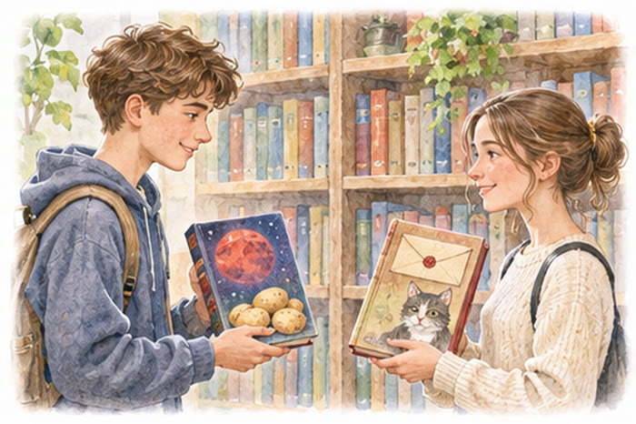

Listen to the text
Speed:

Tymofii and Daryna meet in the school library. Both are looking at the same shelf. Tymofii: Hi! Are you looking for something special? Daryna: Hi. I have just finished a great book, and now I don't know what to read next. Tymofii: What was it? Daryna: A detective story. A girl finds an old letter in her grandmother's house and tries to solve a family mystery. Tymofii: Sounds interesting. What did you like about it? Daryna: The plot. I couldn't put it down. I read until two o'clock at night. And the ending was a real surprise. Tymofii: I am not really into detective stories. I prefer science fiction: space, robots, the future. Daryna: Really? I have never tried it. Isn't it difficult? Tymofii: Not at all. I can recommend one. It is about a boy who grows potatoes on Mars. It is funny, and there is a lot of real science in it. Daryna: Potatoes on Mars? OK, you have got me. Who is it by? Tymofii: I don't remember the author, but I know where it is. Here. Take it. Daryna: Thanks. And what are you reading at the moment? Tymofii: Nothing. I finished my book yesterday. Daryna: Then take my detective story. I am returning it today. Tymofii: Hmm. A family mystery. Is there a robot in it? Daryna: No. But there is a very clever cat. Tymofii: All right. A cat is almost a robot. Let's swap and meet here in a week. Daryna: Deal. But no spoilers!
Tap any sentence to hear it again.
Сподобалось? На сайті ще більше матеріалів для вчителів!
Reader, презентації, ігри, діагностичні та контрольні роботи до підручників 1-11 класів.
Перейти на сайт materials.allaenglish.com